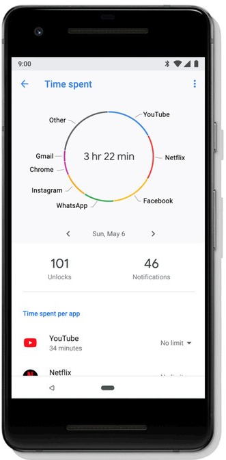

Digital Wellbeing

In the technological era we are living in, users interact with a plethora of “smart” devices every day, ranging from personal computers to smartwatches and voice assistants. While users derive several benefits from using these devices, the last few years have seen a growing amount of public discussion and research attention on the negative aspects of overusing technology, from smartphones to social media and the Internet in general. Many people feel nowadays conflicted about the amount of time they spend with digital technologies, especially when devices are used passively, or as a tool for detracting from people’s lives. Recently, even tech giants like Google and Apple have introduced tools for monitoring, understanding, and limiting technology use in their operating systems. Google, in particular, envisioned a new type of wellbeing to be considered in contemporary society, the so-called "digital wellbeing".
My research in the digital wellbeing context aims at exploring novel solutions to promote a conscious and meaningful use of technology.
Digital Wellbeing and Smartphones
Smartphones have become an integral part of our daily lives.Through smartphones, users can nowadays perform many different tasks such as browsing the web, reading emails, and using social networks. As smartphone use increases dramatically, however, so do studies about the negative impact of overusing technology. Smartphones, in particular, have been found to be a source of distraction, and their excessive use can be a problem for mental health and social interaction. Many different mobile apps for breaking "smartphone addiction" and achieving "digital wellbeing" are available. However, it is still not clear whether and how such solutions work. Which functionality do they have? Are they effective and appreciated? Do they have a relevant impact on users’ behavior? Can we do better?
A Review of Contemporary Solutions

In our research, we first conducted a functionality review of the 42 most popular digital wellbeing apps available in the Google Play Store, by highlighting which features are more common, and how such apps support a more conscious use of technology. Then, we extracted 1,128 reviews left by users for these 42 apps, and we conducted a thematic analysis to gain insight about the users’ experience with digital wellbeing apps and their features. Finally, we designed and implemented Socialize, our own digital wellbeing app, by integrating the most common digital wellbeing features extracted during our functionality review. We conducted a three-week in-the wild study of Socialize with 38 participants. Our aim was to gain a quantitative insight into the findings stemming from the first 2 qualitative studies, thus assessing whether the features that contemporary digital wellbeing solutions share are effective for changing behavior and promoting a more conscious use of the smartphone.
These are the most interesting results extracted from the studies:
-
Contemporary digital wellbeing apps are mainly focused on supporting self-monitoring, i.e., tracking user’s behavior and receiving feedback, but are not grounded in habit formation nor social support literature. Habit formation, in particular, could play an important role in digital wellbeing apps, supporting behavior change towards a more conscious use of technology, and ensuring the long-term effects of the new behavior.
-
Contemporary digital wellbeing apps are liked by users and useful for some specific use cases, but they are not sufficient for effectively changing users’ behavior with smartphones. By using self-monitoring functionality, in particular, such apps are effective for temporary breaking some unhealthy behaviors, e.g., the excessive use of social networks, but they fail in other circumstances. For example, by offering functionality that can be easily bypassed, they do not prevent users from constantly checking their devices.
-
Promising areas to go beyond self monitoring techniques include the design of digital wellbeing apps that support the formation of new habits and promote self regulation through social support
The source code of Socialize is freely available on GitLab. If you are interested, you can also download the collected data and the resulting codebooks:
The research was published in a full paper at CHI ‘19. Watch the video of the presentation!
From Self-Monitoring to Habit-Formation

While self-tracking plays an important role in the behavior change process, it strongly depends on the monitoring behavior: once the monitoring stops, e.g., because the app does not work or because users get bored, the behavior can revert to pre-interventions levels. To better assist users in personalizing their behavior with the smartphone, we started to analyze smartphone usage under the lens of habits. We first designed and implemented a data analytic methodlogy based on association rules mining to extract habits from smartphone usage data. By assessing the methodology
over a dataset containing more than 130,000 phone usage sessions collected in-the-wild, we showed evidence that smartphone use can be characterized by different types of complex links between contextual situations and usage sessions, that are highly diversified across users. We therefore applied the data analytic methodlogy in a habit-forming version of our Socialize app. The new version makes use of implementation intentions and just-in-time reminders to assist users in replacing existing (and unwanted) smartphone habits, e.g., browsing Facebook at work, with new and desirable habits that do not involve the usage of the mobile device. Besides reducing the time spent on the mobile apps that are habitually checked, the new version of Socialize helps users reduce their overall smartphone use in a given context. An in-the-wild evaluation with 20 smartphone users (age 19-31) shows evidence that the app can effectively assist users in better controlling their smartphone use, with just-in-time reminders that can significantly reduce the impact of unwanted smartphone habits.
Check out the following papers for additional details on our research on digital wellbeing and smartphones!
- The Race Towards Digital Wellbeing: Issues and Opportunities, Alberto Monge Roffarello and Luigi De Russis, Proceedings of the 2019 CHI Conference on Human Factors in Computing Systems (CHI ‘19) [pdf]
- Towards Detecting and Mitigating Smartphone Habits, Alberto Monge Roffarello and Luigi De Russis, Proceedings of the 2019 ACM International Joint Conference and 2019 International Symposium on Pervasive and Ubiquitous Computing and Wearable Computers (UbiComp 2019) [pdf]
- Understanding, Discovering, and Mitigating Habitual Smartphone Use in Young Adults, Alberto Monge Roffarello, and Luigi De Russis, ACM Transactions on Interactive Intelligent Systems (TiiS) [pdf]
Moving Towards Multi-Device Digital Wellbeing

Despite a growing interest on improving people's relationship with technology, researchers and media often relate digital wellbeing as a problem that characterize single technological sources at a time, with a particular focus on smartphones. Targeting a single source, however, may not be sufficient to capture all the nuances of people's digital wellbeing.In today's multi-device world, indeed, users typically use more than one device at a time: as recently called for in a recent CHI workshop, more effort should be put into evaluating multi-device and cross-device interaction to enhance digital wellbeing.
Following this need, we started to move towards multi-device digital wellbeing, with the aim of providing insights to better cope with digital wellbeing in a multi-device context. We first analyzed 322 popular tools for digital self-control in the form of smartphone apps or web browser extensions, with the aim of understanding whether and how they take into account multi-device settings. We found that the majority of the analyzed tools are rooted in a single-device conceptualization that prevent them from capturing all the nuances of people's multi-device experiences.
To understand how to overcome such a single-device conceptualization, we then conducted a background interview and a co-design and sketching exercise with 20 users with different occupations and backgrounds. In the interview, we probed the
factors that shape multi-device experiences, and the triggers that make users switch from one device to another. In the co-design and sketching exercise, instead, we investigated what each participant would change about their behavior with their different devices, and what could help them facilitate and maintain these changes.
We found that digital wellbeing problems like distractions are not related to the device per se, but
to its Internet connectivity: in that sense, distractions can come from any connected device. Participants also reported that using more than one device at the same time can be either a positive or negative experience, depending on the underlying performed tasks. When devices are used to satisfy multiple, incoherent tasks like browsing social networks on the phone while watching a film on the smart TV, in particular, the multi-device experience can negatively influence user's digital wellbeing, e.g., with a sense of frustration for not being able to follow the movie plot. This suggests the need of designing more integrated DSCTs able to analyze and make sense of data collected from a variety of sources, with cross-device interventions that can adapt to different technological sources and performed tasks
Thanks to our findings, we also call for digital wellbeing solutions that go beyond technological tools, encompassing social, educational, and even political factors. Our participants, indeed, agreed on the importance of learning how to properly use technology since childhood: in our multi-device world, a "digital education" school course highlighting
both positive and negative sides of using (and overusing) technology may contribute to the digital wellbeing of future generations, and may be more effective than any lock-out mechanism.
Check out the new CHI '21 paper!
- Coping with Digital Wellbeing in a Multi-Device World, Alberto Monge Roffarello, and Luigi De Russis, Proceedings of the 2021 CHI Conference on Human Factors in Computing Systems (CHI ‘21) [pdf]